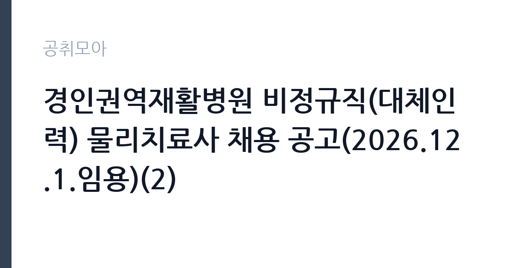

[공공기관] 경인권역재활병원 비정규직(대체인력) 물리치료사 채용 공고(2026.12.1.임용)(2)
대한적십자사 · 인천 · 마감 2026-11-13 (D-16) · 출처 잡알리오

한눈에 보는 모집 조건
| 기관 | 대한적십자사 |
|---|---|
| 공고명 | 경인권역재활병원 비정규직(대체인력) 물리치료사 채용 공고(2026.12.1.임용)(2) |
| 고용형태 | 기간제 |
| 근무지 | 인천 |
| 게시일 | 2026-10-28 |
| 마감일 | 2026-11-13 (D-16) |
지원자격, 이렇게 읽으세요
- (필수) 물리치료사 면허증 소지자
- (필수) NDT, 보바스, PNF, TONA 중 1개 이상 자격 소지자(120시간 이상 이수)
- ※ 중추신경계발달재활치료 심평원 청구 가능 자격 확인
기간제 근로자는 근로계약 기간이 정해진 신분입니다. 계약 기간과 갱신 가능 여부가 근로계약서에 명시되며 기간 만료 시 근로관계가 종료됩니다. 결원 보충이나 특정 사업 기간에 맞춰 채용되는 경우가 많아 업무 범위가 명확합니다. 이번 공고는 대한적십자사가 직접 진행하는 자체 전형입니다. 작업치료 직무는 작업치료사 면허가 필수입니다. 면허 취득 예정자도 지원할 수 있는지, 졸업 예정자와 자격 취득 예정자의 인정 범위가 어떻게 다른지 공고문에서 먼저 확인해야 합니다. 경력자는 해당 분야 근무 연수와 담당했던 환자군을 증명서로 입증해야 합니다. 병원 규정상 정년(만 60세)을 넘으면 지원할 수 없고, 채용 후에는 결격사유 조회와 채용 신체검사가 이어집니다. 제출서류는 공고문에 적힌 순서대로 정리하면 담당자가 확인하기 쉽습니다. 공고문의 응시자격 표를 보면 자격 항목이 여러 줄로 나뉘어 있으므로, 각 줄을 하나씩 체크하며 본인 해당 여부를 표시해 두면 누락을 줄일 수 있습니다. 자격 취득 예정자는 채용 공고의 예정자 허용 조항을 먼저 확인해야 합니다. 조항이 없으면 지원 자체가 반려될 수 있습니다. 이 공고 원문에 적힌 응시 조건 문구는 '(필수) 물리치료사 면허증 소지자' / '(필수) NDT, 보바스, PNF, TONA 중 1개 이상 자격 소지자(120시간 이상 이수)' / '※ 중추신경계발달재활치료 심평원 청구 가능 자격 확인'입니다. 문구를 그대로 읽고 본인 해당 여부를 하나씩 표시해 두면 서류 단계에서 탈락하는 일을 줄일 수 있습니다.
이 공고의 포인트
이 건은 대한적십자사가 같은 시기에 낸 3개 모집분야 가운데 작업치료 직무입니다. 다른 직무 공고와 요건이 다르므로 지원 전에 모집분야 표를 대조해야 합니다. 이 공고의 첫 번째 포인트는 고용 형태입니다. 계약 기간이 정해져 있어 근무 종료 시점이 명확합니다. 그만큼 짧은 기간에 어떤 실적을 남길지가 중요해집니다. 두 번째는 업무 범위가 명확하다는 점입니다. 작업치료 직무로 채용되므로 배치 이후 담당 업무가 크게 흔들리지 않습니다. 세 번째는 근무지입니다. 인천 지역 근무로 접근성은 좋지만 그만큼 지원자가 몰리는 지역이므로 경쟁률을 넉넉히 잡아야 합니다. 모집 인원이 적은 만큼 지원자 한 명 한 명의 서류 완성도가 당락에 크게 작용합니다. 같은 직무로 함께 올라온 공고 가운데 접수 마감이 가장 늦은 편이라 준비 시간을 상대적으로 확보할 수 있습니다. 선발 인원은 공고문에 명시되어 있으니 모집분야 항목을 함께 확인하십시오.
전형은 어떻게 진행되나
1차 서류, 2차 면접의 2단계로 진행되는 구성이 일반적입니다. 서류에서는 자격 요건과 경력 증빙을 확인하고, 면접에서는 실제 업무 수행 능력과 조직 적응을 봅니다. 직무에 따라 필기시험이나 실기, 컴퓨터 활용 시험이 추가되기도 하므로 공고문의 전형표를 먼저 확인하십시오. 단계별로 합격자만 다음 전형에 응시할 수 있고, 단계마다 응시 자격 확인 서류를 다시 제출해야 하는 경우가 있습니다. 최종합격자 발표 후에는 신원조회와 채용 신체검사가 남아 있습니다. 서류 단계에서 요건을 충족하지 못하면 이후 전형을 준비할 기회가 없으므로, 제출 전 요건 대조를 한 번 더 하는 것이 좋습니다.
원문에서 확인한 전형 방식
○ (필수) 물리치료사 면허증 소지자 ○ (필수) NDT, 보바스, PNF, TONA 중 1개 이상 자격 소지자(120시간 이상 이수) ※ 중추신경계발달재활치료 심평원 청구 가능 자격 확인 ○ 소아운동치료 경력 보유자 우대
이런 분께 추천해요
- 작업치료사 면허를 보유한 분
- 평가 기록과 재활 회의 참여 경험이 있는 분
- 계약 기간 동안 환자 치료의 연속성을 지킬 수 있는 분
지원 전 체크리스트
- 응시자격 요건과 경력 기준을 충족하는가 — 경력은 증명서로 입증해야 합니다
- 계약 기간과 근무 시작일·종료일을 확인했는가
- 제출서류 목록을 모두 준비했는가 — 누락 시 서류 단계에서 탈락합니다
- 접수 마감 2026-11-13 이전에 접수 방식을 확인해 제출했는가
모집 일정과 제출 타이밍
공고 게시일은 2026-10-28, 접수 마감은 2026-11-13입니다. 준비 기간은 약 16일로 서류 준비와 자격 증빙을 함께 처리하기에는 넉넉하지 않은 편입니다. 첫 이틀 안에 공고문과 첨부 서식을 내려받아 요건을 확인하고 남은 기간에 증빙 서류를 발급받는 일정이 현실적입니다. 면접은 서류 합격자 발표 후 짧은 간격으로 진행되는 경우가 많으므로 서류 제출과 동시에 면접 준비를 시작하는 편이 안전합니다. 마감일에는 접수 시스템이 몰리므로 하루 전까지 제출을 마치는 것이 좋습니다. 공휴일이 끼어 있으면 증명서 발급이 늦어질 수 있으니 발급 일정을 앞당기십시오.
직무 이해하기: 공공기관
대한적십자사는 인도주의 사업과 혈액 사업, 재난 구호를 수행하는 법정 특수법인입니다. 혈액원은 헌혈과 혈액 제조·공급을 맡고 운전과 시설 관리 인력을 별도로 운영합니다. 작업치료 업무는 환자가 일상생활 동작과 사회 복귀를 되찾도록 평가하고 훈련을 설계하는 일입니다. 근력·관절 가동 범위·인지 기능을 평가해 치료 목표를 세우고, 일상생활 동작 훈련과 인지 재활, 보조기 착용 훈련을 진행합니다. 진료과 의사·간호·사회복지 인력과 함께 회진과 재활 회의에 참여하고, 치료 기록과 평가지를 매 세션마다 남깁니다. 국비계약직은 국가 지원 사업의 인건비로 채용되는 경우가 많아 사업 기간과 인건비 기준이 계약서에 명시됩니다. 환자 이동과 보조가 필요해 허리와 어깨 부담이 따르는 직무입니다. 근무조는 사업 일정과 기상 상황에 맞춰 편성되므로 면접에서 배치 구역을 확인하는 것이 좋습니다. 현장 업무와 사무 업무의 비중은 기관의 사업 일정에 따라 계절별로 달라집니다. 이 건의 근무 대상 지역·부서는 원문 기준 '대체인력'입니다 원문에 '(필수) 물리치료사 면허증 소지자'라는 조건이 명시되어 있습니다.
자기소개서 작성 팁
지원서는 평가-계획-중재-재평가의 흐름으로 경험을 정리하면 읽기 쉽습니다. 담당했던 환자 수와 진단군, 적용한 치료 기법, 기능 개선 결과를 수치로 제시하십시오. 국비 사업 직무라면 사업 목표와 본인 경험을 연결하는 문단이 필요합니다. 짧은 계약 기간이라도 기록과 인수인계를 철저히 하겠다는 태도를 밝히면 신뢰를 얻습니다. 문항별 글자 수 제한을 먼저 확인하고, 각 문항의 첫 문장에 결론을 배치하는 방식이 읽기 쉽습니다. 지원 동기는 기관의 어떤 사업에 기여하겠다는 한 문장으로 시작하고, 이어서 본인의 경험을 근거로 붙이십시오. 감점을 피하려면 다른 기관에 보낼 수 있는 범용 문장을 그대로 쓰지 않는 것이 중요합니다. 기관 이름과 사업명이 문장 안에 자연스럽게 들어가야 준비도가 드러납니다.
면접 준비 포인트
면접에서는 평가와 치료 계획 수립 과정을 구체적으로 묻습니다. 같은 진단이라도 환자 상태에 따라 목표를 어떻게 다르게 세우는지, 치료에 반응하지 않을 때 무엇을 바꾸는지 답해야 합니다. 다른 직종과 협업한 경험, 보호자에게 치료 계획을 설명한 경험도 자주 질문합니다. 국비계약직은 사업 기간이 정해져 있으므로 근무 기간 동안의 목표를 함께 제시하면 준비도가 드러납니다. 본인 경험을 말할 때는 기간, 역할, 결과를 순서대로 정리해 두면 질문이 바뀌어도 활용할 수 있습니다. 모르는 질문에 추측으로 답하면 감점 요인이 되므로, 확인 후 답하겠다고 밝히는 편이 안전합니다.
급여·근무조건 읽는 법
알리오(공공기관 경영정보 공개시스템) 2025년 결산 경영공시 기준으로 대한적십자사 일반정규직 1인당 평균보수액은 6,937만원, 공시된 신입사원 초임은 3,869만원입니다. 무기계약직 1인당 평균보수액은 4,017만원으로 공시되어 정규직과 차이가 납니다. 평균보수액은 기본급에 고정수당·실적수당·성과상여금·급여성 복리후생비를 모두 합산한 값이라 월 기본급만 보고 판단하면 실제와 크게 어긋납니다. 이번 공고는 기간제 채용이라 위 정규직 평균보수는 그대로 적용되지 않습니다. 기간제 보수는 기관의 기간제 임금 기준을 따르며 계약 기간이 함께 정해집니다. 국비계약직 보수는 사업 인건비 기준과 병원 임금 규정을 함께 적용받는 경우가 많아 동일 직종의 정규직과 차이가 날 수 있습니다. 계약서에 월 급여와 수당 항목, 계약 기간이 명시되므로 총액을 기준으로 비교해야 합니다. 2026년 적용 최저임금은 시급 10,320원, 월 환산 2,156,880원(주 40시간·209시간 기준)입니다. 고용노동부 고시 제2025-47호로 확정된 금액입니다. 공고문에 금액이 제시되지 않은 항목은 원문 보수표나 처우 설명에서 확인해야 하며 확인되지 않은 수치는 쓰지 않는 것이 원칙입니다. 비교할 때는 월 급여뿐 아니라 상여·명절휴가비·복지포인트·초과근무수당까지 포함한 연간 총액으로 계산하십시오. 기간제라면 계약 기간 동안의 총액을, 무기계약이라면 호봉 상승과 정년까지의 누적 소득을 기준으로 판단하는 편이 정확합니다.
자주 묻는 질문
- 선발 인원은 몇 명인가요?
공고문의 모집분야 항목에 직종별 인원이 표로 제시되어 있습니다. 첨부된 공고문 원문에서 확인하십시오. - 근무지는 어디인가요?
인천 지역의 대한적십자사 소속 근무지입니다. 세부 주소와 출퇴근 조건은 원문 공고문에서 확인할 수 있습니다. - 보수는 얼마인가요?
채용 신분(기간제)과 기관 임금 규정에 따라 정해지며 구체적인 금액은 공고문 처우 항목에 제시됩니다. 금액이 공개되지 않은 경우에는 원문의 보수표를 확인하십시오.
함께 보면 좋은 공고
[공공기관] 2026년 제2차 국외소재문화유산재단 직원 채용(6급, 임시계약직 사업A/사업B) — 마감 2026-11-09[공공기관] 한국농어촌공사 금강사업단(보훈/장애제한경쟁) 공무직(청소원) 채용 — 마감 2026-11-13[공공기관] 분당서울대학교병원 진료교수요원(핵의학과) 채용공고 — 마감 2026-11-09출처: 잡알리오 공개정보를 바탕으로 공취모아가 정리한 안내글입니다. 모집 조건·일정은 변경될 수 있으니 지원 전 반드시 원문 공고문을 확인하세요. 본 글은 정보 제공용이며 합격을 보장하지 않습니다.